When it comes to visualization in R, I think the base graphics in R are a bit kludgy.
We won’t spend long on them, but I want you to know the basics.
hist()You have already run into the hist() function in your homework. It makes a histogram.
hist(iris$Petal.Length)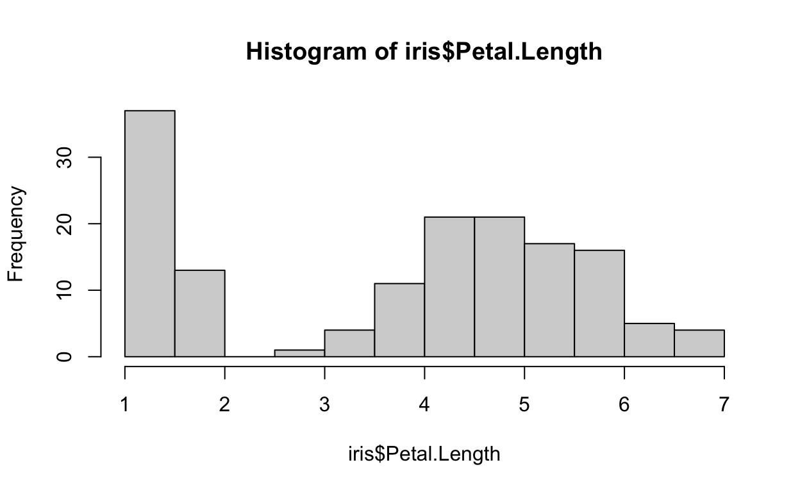
plot()Appropriately enough, the major function for most kinds of plots in base R is called plot().
plot() is a generic function, which means it can produce a variety of different types of plots depending on the kinds of variables you give it.
The best way to pass arguments to the plot function is using a formula, which employs the tilde character ~.
Example: plot(y~x): you can read this as ‘plot y as a function of x’. This means put y on the vertical axis, and x on the horizontal axis.
You will see formulas a lot once we get into doing statistical tests in R, as this is typically how you specify what kind of test you want to do.
plot(iris$Sepal.Width~iris$Sepal.Length)You can produce other types of plots by specifying the type= argument to plot(). For example, there is a built in dataset in R that consists of a time series of body temperature measurements of a beaver every 10 minutes (seriously).
head(beaver1)If we want to make a line plot, we can do the following. Note, there are 114 temperature observations, so I am just plotting them numerically as observation 1, 2, 3, etc. Also, I am specifying x and y directly as arguments, rather than using a formula.
plot(x=1:114, y=beaver1$temp, type="l")When the variable to the right of the formula is a factor, then plot() is smart enough to know that you want to plot a boxplot.
plot(iris$Sepal.Length~iris$Species)There are a bewildering array of arguments which allow you to customize base R plots. A few of the most common are:
pch - defines the plotting symbol used (I like pch=16)col - the color for the plotting symbol (see the many color names R knows by typing colors())xlab - title for the x axisylab - title for the y axismain - main title for the plotCheck out ?par for an exhaustive list of these arguments….there are A LOT!
plot(iris$Sepal.Length~iris$Sepal.Width,
pch=16,
col="springgreen",
xlab='sepal width',
ylab='sepal length',
main='scatterplot of sepal width and length in iris flowers')ggplot2As I mentioned, I find these base R plots to be a bit underwhelming.
I only showed you the how to do base R plots because you will run into them on the internet, so it helps to know the basics.
I prefer to use the ggplot2 package over base graphics, and I will insist you learn ggplot2 (another tidyverse package).
We will use a dataset called diamonds, which is part of the ggplot2 package. Lets take a look at the head (i.e. first few rows) of this dataset.
head(diamonds) #I assume you have already done library(ggplot2)qplot() functionThe ggplot2 package has a handy function called qplot which stands for “quick plot”. It is designed to be a shortcut to some common plots, and to work much like the standard base plot() function in R
The simplest qplot() has a variable on the x axis, and specifies a dataframe in which to look for this variable.
qplot() will attempt to guess the best geom (graphical geometric representation) with which to display the data.
Notice that qplot() correctly guesses that I want a histogram below, because this is the standard way to plot a single continuous variable.
qplot(x=carat, data=diamonds)## `stat_bin()` using `bins = 30`. Pick better value with `binwidth`.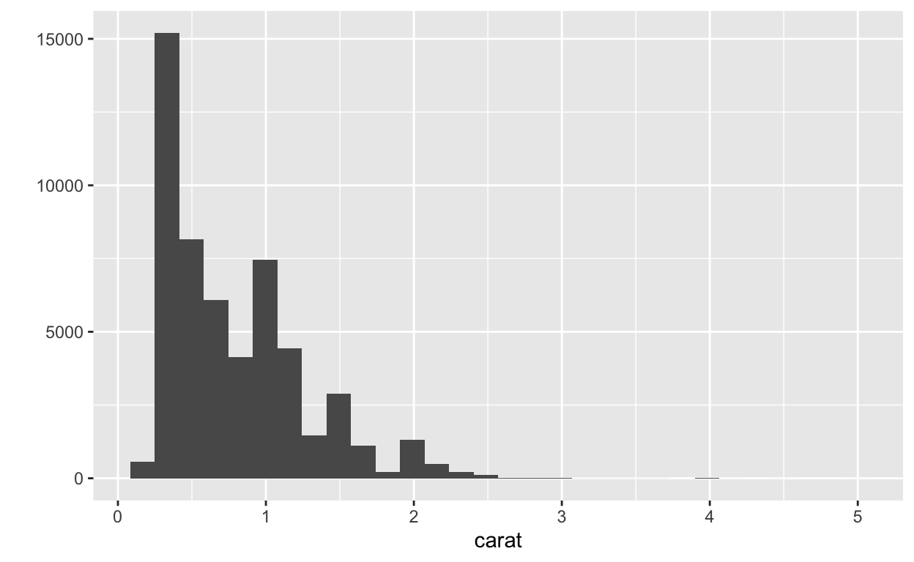
If we specify an additional variable for the y axis, then the default geom is a scatter of points.
This time we will also specify a value for main which is the main title.
qplot(x=carat, y=price, data=diamonds, main="Diamond Weight by Price")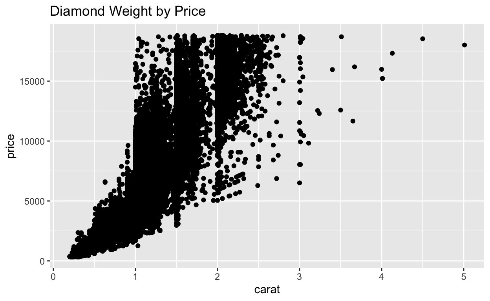
Now lets plot clarity by carat. Note: carat is a continuous measure of weight, and clarity is a categorical variable.
qplot(x=clarity, y=carat, data=diamonds)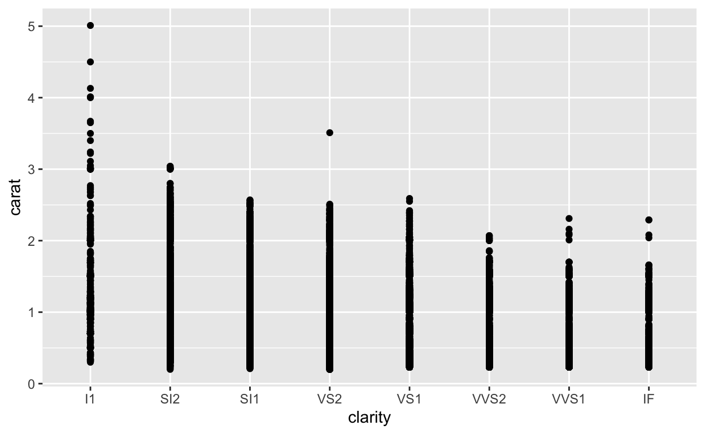
The plot above is OK, but there are a ton of points. We can see the underlying distribution of data points better using a boxplot, by specifying geom='boxplot'.
Boxplots illustrate the the median (center line), the upper and lower quartiles (the box), and show outliers as single points.
Here is a handy reference for the available geoms.
qplot(x=clarity, y=carat, data=diamonds, geom="boxplot")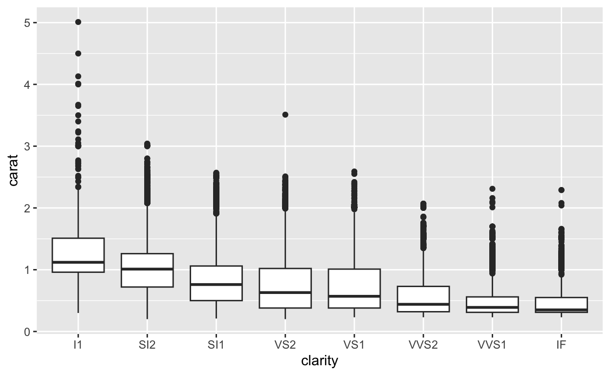
We can add additional layers using the + symbol. First, we start with the bivariate plot, then add a new layer.
The function stat_smooth() adds a summary layer.
qplot(x=carat, y=price, data=diamonds, main="Diamond Weight by Price") +
stat_smooth()## `geom_smooth()` using method = 'gam' and formula 'y ~ s(x, bs = "cs")'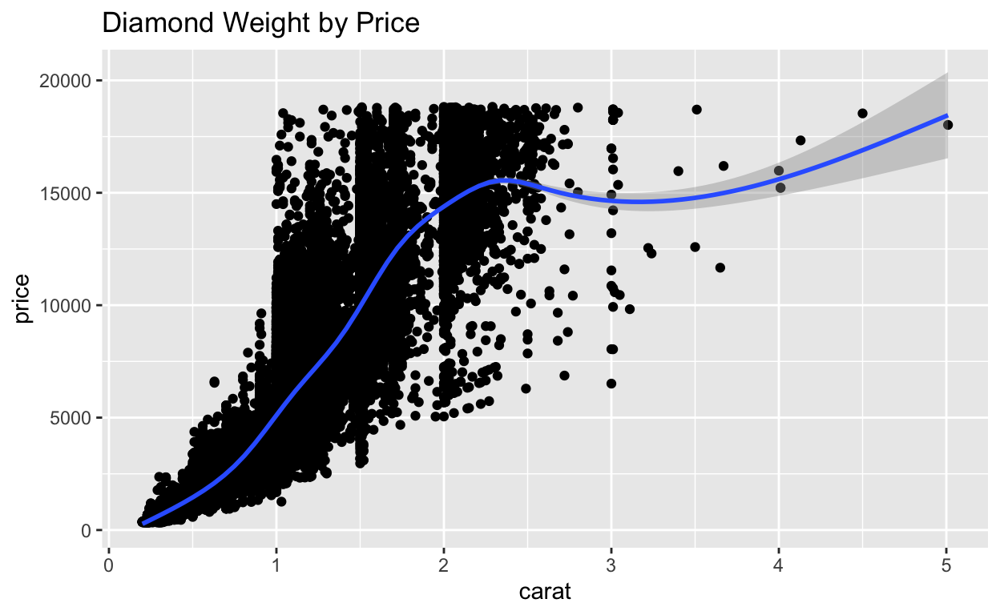
The relationship on the previous plot is clearly not linear.
Make the same plot, but log transform both of the variables. When you add the trend line, use method="lm", since the logged data more closely approximate a linear relationship.
Don’t save logged variables to a variable, log the variables on-the-fly when you make the plot.
### Your answer hereqplot(x=log(carat), y=log(price), data=diamonds, main="Diamond Weight by Price") +
stat_smooth(method="lm")Visualize a third variable by changing:
- color or fill
- shape or size of points
qplot(x=carat, y=price,
data=diamonds, color=clarity)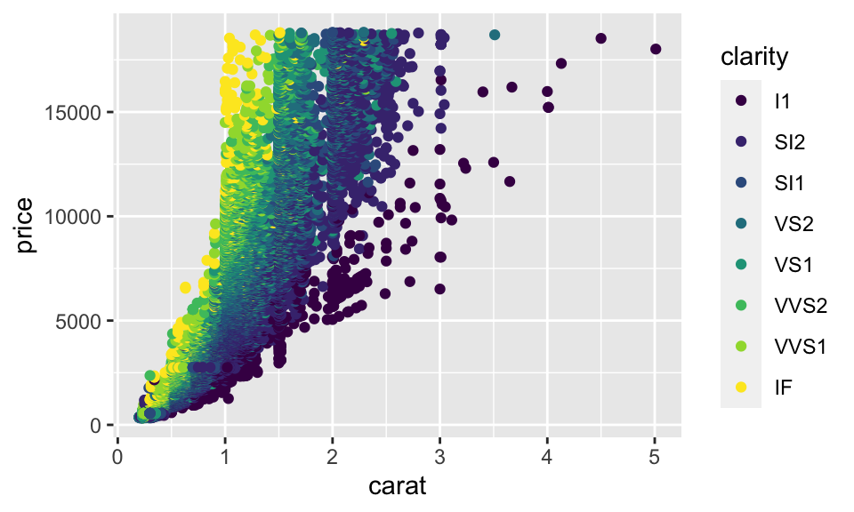
qplot(x=carat, y=price,
data=diamonds, shape=cut)## Warning: Using shapes for an ordinal variable is not advised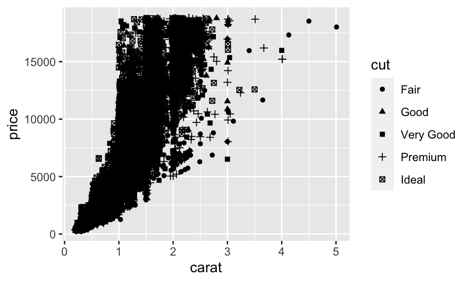
When we have so many data points, it is hard to tell what is going on.
It would be nice to have a grid of sub-plots, so we can see the effect of these factors on the relationship between price and size.
We can use the facets argument and tell it which factors we want to use, as in facets=row_var~column_var (here the formula notation is back, like we saw earlier in the plot() function)
qplot(x=carat, y=price, data=diamonds,
main="Diamond Weight by Price", facets=cut~clarity)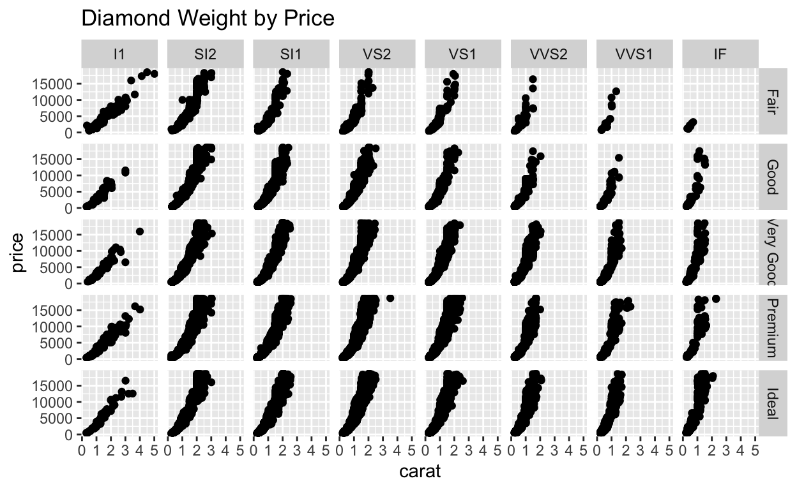
There are several theme options that you can add to a plot, in the same way you added the stat_smooth() layer previously.
You can customize almost everythign using the theme() function, but there are some helpful shortcut functions that I use a lot to change a bunch of theme elements at omce to get a nice effect.
theme_bw()theme_bw() is great because it gets rid of the default gray background.
qplot(x=carat, y=price, data=diamonds,
main="Nice plot with no gray background", color=clarity) +
theme_bw()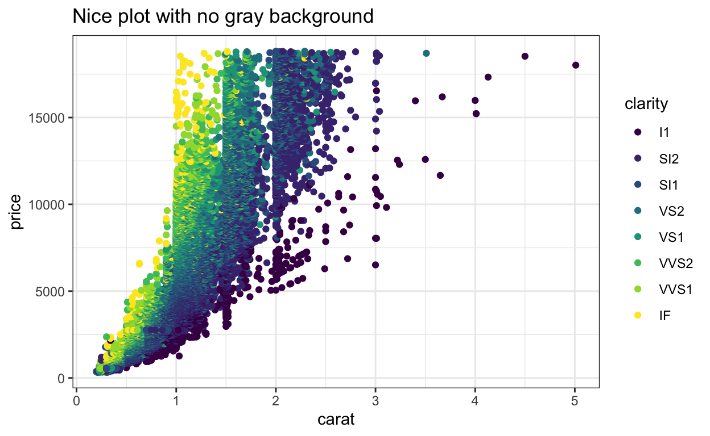
theme_classic() with BIG textTheme classic is super basic, looking more like the base R graphics.
You can also specify a value for the base text size in any of these themes, to increase size for presentations, etc. All the text elements will scale intelligently. Notice how much bigger all the text elements are in this plot than the previous one.
qplot(x=carat, y=price, data=diamonds,
main="This theme is....classic", color=clarity) +
theme_classic(base_size=18)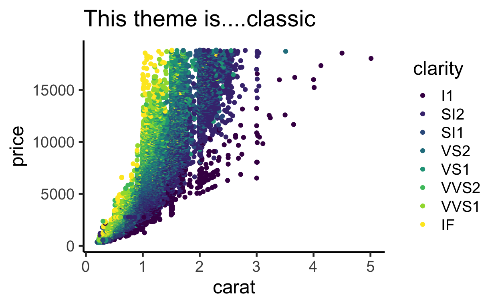
iris ChallengeUsing the iris dataset and the qplot function, plot Sepal.Length on the x axis, and Sepal.Width on the y axis, and color code the points by Species. Style your plot using theme_bw()
## Your answer hereqplot(x=Sepal.Length, y=Sepal.Width, data=iris, color=Species) +
theme_bw()ggplot()qplot() is a shortcut. You can’t get all the functionality of ggplot2 using the qplot() shortcut.
Lets talk about the logical structure of ggplot2 graphics.
These are elements (shared by all layers in a plot)
data- a dataframe which applies to all layers. Note:ggplotworks best when everything you need for your plot is in the same dataframemapping- mapping of data values into plot values (either coordinates or aesthetic properties like color values) - mappings are created by theaes()functionfacets(optional) - specification of subplots within a plot, mapped to a column in the dataframe
Once your background is set up, you can add elements that are layered over the background.
geom- choice of how to graphically represent the datastat- an optional statistical transformation of rows in the dataframe (sometimes this is the ‘identity’ tranformation, which means effectively no transformation)- at the layer level, you can also specify new values for
dataandmappingthat only apply to a particular layer
ggplot() exampleLet’s recreate this base plot in ggplot2 using the car data from Motor Trends, which is available as a built in dataset called mtcars
plot(mtcars$mpg~mtcars$disp, pch=16, xlab="engine size (cubic inches)", ylab="fuel efficiency (miles per gallon)", main="car fuel efficiency by engine size")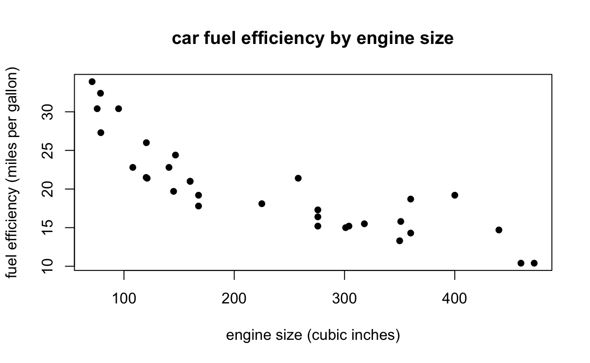
First, we set up the background elements by specifying a dataframe, and mapping the columns to the different elements using aes()
ggplot(data=mtcars, mapping=aes(x=disp, y=mpg))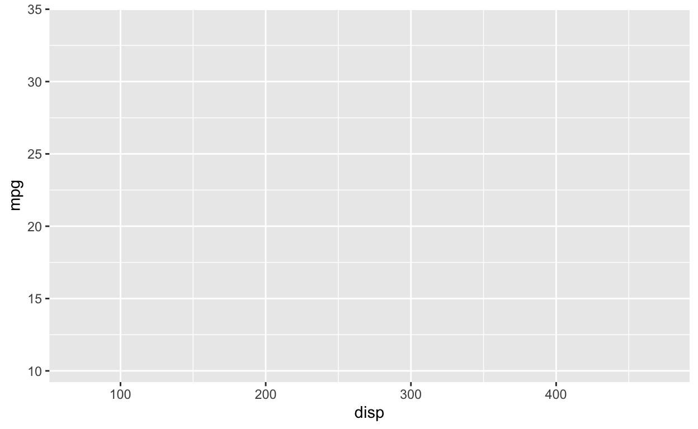
We pass the dataframe through the data argumement, and do the mapping using the mapping argument. Note, when you map a column of the dataframe to a particular graphical element, you use the aes() function, which stands for “aesthetic”. Some people read this as “ask” as in: "ask x to represent disp and ask y to represent mpg.
Notice that we can see our axes set up, but nothing else appears because this plot doesn’t have layers yet.
Next, we must specify a layer, and a geometric object geom to use to represent the data. Here, we add a single line of code, telling it to use the “point” geom to represent the data.
ggplot(data=mtcars, mapping=aes(x=disp, y=mpg)) +
geom_point()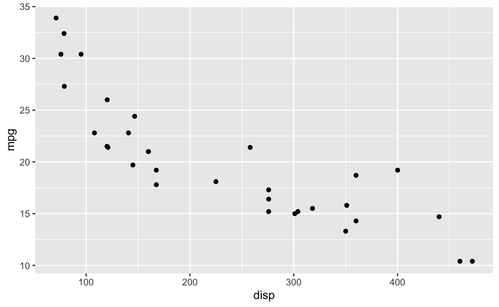
The geoms all are in the format geom_point, geom_line, geom_boxplot, etc.
Lastly, we use the labs() function to customize the x and y axis labels, and add a title
ggplot(data=mtcars, mapping=aes(x=disp, y=mpg)) +
geom_point() +
labs(x="engine size (cubic inches)",
y="fuel efficiency (miles per gallon)",
title="car fuel efficiency by engine size")To summarize, we have set up our background using the ggplot() function, and mapped our aesthetics using aes()
Then we have added a layer, specifying which geometric object to use to represent the data.
Finally, we have added customized labels for our axes and a title using the labs() function.
ggplot() exampleHere is a much more complex example, where we:
geom_boxplot(), mapping the fill aesthetic at the level of the boxplot layer rather than the background. Note that thisscale_y_continuous (I have done this to make more space at the top for my annotation)ggplot(data = diamonds, aes(x = clarity, y=price)) +
geom_boxplot(aes(fill=cut)) +
theme_bw(10) +
labs(title="Price by Clarity") +
scale_y_continuous(limits=c(0,25000)) +
annotate("text", x=4.5, y=23000, label="Lots of outliers", size= 4)ggplot() workflowggplot(data=mydata, mapping=aes(x=myVar)) function to set background elements which will apply to all layers.
data argumentaes() to map dataframe columns to aesthetics, using the mapping argument. Things you can set include
xycolor (the color of points and lines)fill (the color of polygons or boxplots, i.e. things that have an area to fill)shapesizealpha (i.e. transparency)group - the names of factors which speficy groups….this often set implicity when you color code by a factor.color="blue") doesn’t go inside a call to aes()facet_grid() or facet_wrap() to add faceting formula.geom_xxx() functions like:
geom_point()geom_histogram()geom_bar()geom_path(), geom_rect(), geom_polygon()geom_abline()geom_text()geom_hline() and geom_vline()ggplot(). If you want to override this behavior (e.g. to use a different dataframe), you can use the argument inherit.aes=FALSEannotate() to your plotlabs(x="The X axis label", title="my nice little graph")guides() to tweak legendscale_x_continuous(limits=c(0,10)) to customize x scalescale_fill_xxx() and scale_color_xxx() for customizing color choicesggsave()Recreate this plot yourself, using the mtcars dataset.
Note, the cyl variable is stored as a continuous variable, so you need to call factor(cyl) when you make the plot, to tell ggplot() to treat this a a categorical variable. Otherwise the fill color won’t work as expected.
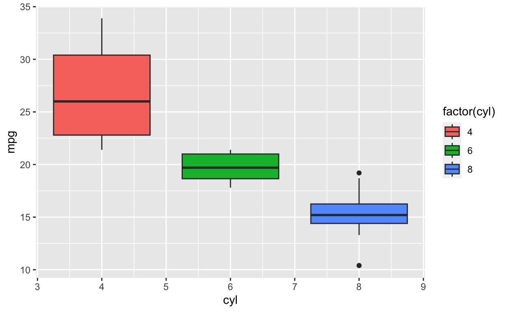